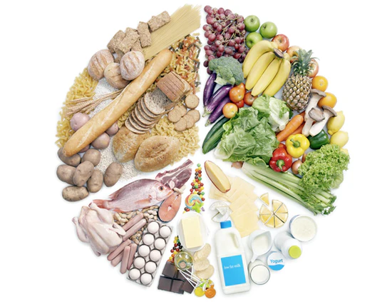

La importancia del ejercicio para la salud física
El ejercicio regular es fundamental para mantener una buena salud física y mental. La actividad física no
solo ayuda a controlar el peso corporal, sino que también fortalece el sistema cardiovascular, mejora la
resistencia muscular y ósea, y reduce el riesgo de enfermedades crónicas como la diabetes tipo 2,
hipertensión y
enfermedades del corazón. Además, el ejercicio libera endorfinas, conocidas como las hormonas de la
felicidad, que pueden
mejorar el estado de ánimo y reducir los niveles de estrés y ansiedad.
Ejercicios de referencia


Como pueden observar en las imágenes, existen diversos tipos de ejercicios que se pueden realizar para
mejorar la
salud física. Algunos ejemplos incluyen ejercicios aeróbicos como correr, nadar o andar en bicicleta, que
son excelentes para
mejorar la salud cardiovascular y quemar calorías. También están los ejercicios de fuerza, como levantar
pesas o usar bandas de resistencia, que ayudan a construir y mantener la masa muscular y ósea. Además, los
ejercicios de flexibilidad, como el yoga o el estiramiento, son importantes para mantener la movilidad y
prevenir lesiones. Incorporar una variedad de estos ejercicios en tu rutina semanal puede maximizar los
beneficios para la salud.
Alimentos sugeridos

Una alimentación equilibrada es esencial para mantener una buena salud y optimizar el rendimiento físico.
Algunos alimentos sugeridos incluyen frutas y verduras frescas, que son ricas en vitaminas y antioxidantes;
proteínas magras como pollo, pescado y legumbres, que ayudan en la reparación y construcción muscular; y
granos enteros como arroz integral y avena, que proporcionan energía sostenida. Además, es importante
mantenerse hidratado bebiendo suficiente agua a lo largo del día.
Aunque recuerda siempre que todo en exceso es dañino, así que mantén un equilibrio en tu dieta y evita el
consumo excesivo de alimentos procesados, azúcares añadidos y grasas saturadas para promover una salud
óptima.